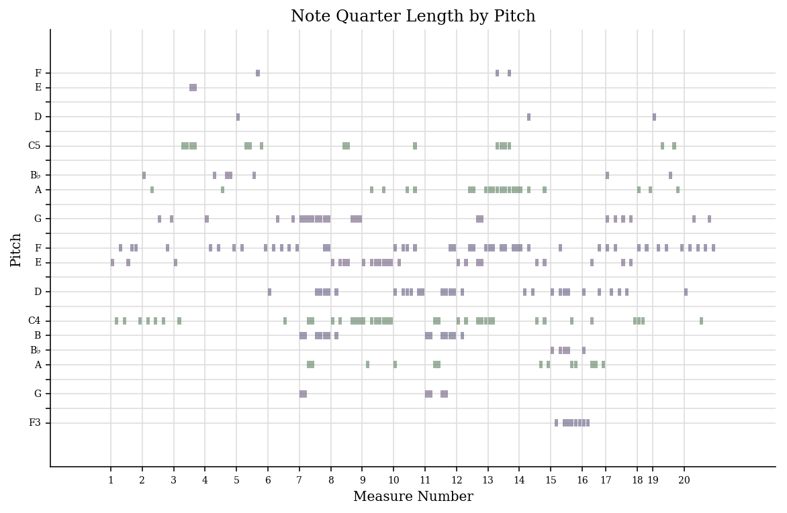

My project
My dataset includes:
Freddie Mercury, “Bohemian Rhapsody” from A Night At The Opera
It was written by Freddie Mercury for the band's 1975 album A Night at the Opera. It is a six-minute suite, consisting of several sections without a chorus: an intro, a ballad segment, an operatic passage, a hard rock part and a reflective coda. The song is a more accessible take on the 1970s progressive rock genre.Here is a visualization I created using music21
- Freddie Mercury, “Killer Queen”from Sheer Heart Attack
This piece is really cool. Also, here is a visualization I created using music21
- Freddie Mercury, “Love Of My Life”from A Nigth at The Opera
This piece is really cool. Also, here is a visualization I created using music21

My dataset is really cool. I have done a lot of work on it. I created an analysis of my three pieces using jSymbolic, which is available here.